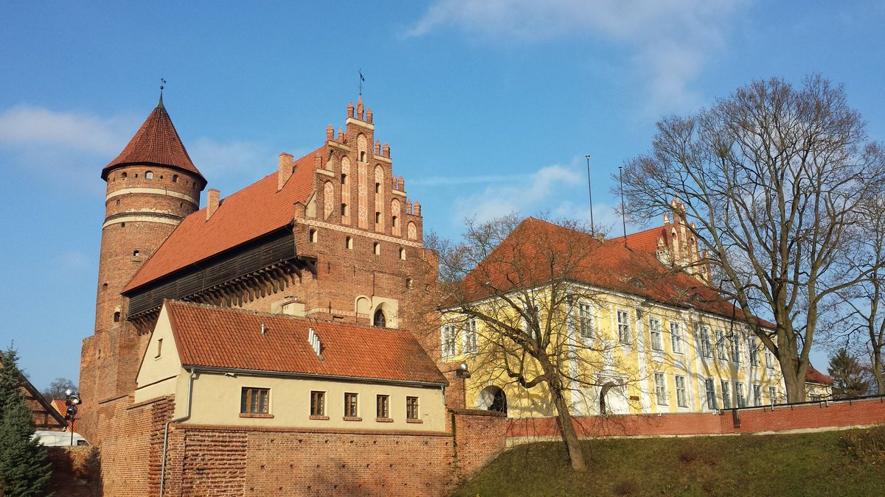

From Krakow we made our way to the north of Poland, we passed through capital of Poland, Warszawa, and we also passed by the town of Grunwald, where a massive battle between the Polish-Lithuanian Commonwealth and the Tuetonic Knights was fought in 1410. We continued on until we reached the city of Olsztyn. There we spent two days looking at the old Prusian city, and admiring the many medival castles built there by the Tuetonic Knights. This part of Poland is very German because after the World War II, this area of land was sceded to the new Polish Republic after the war. The city's name before Olsztyn was Allenstein.
